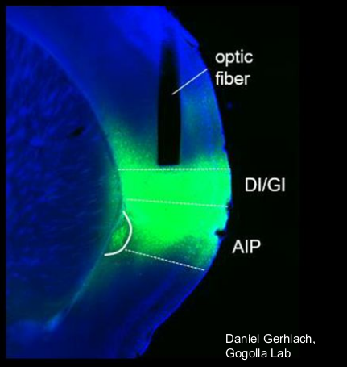

<div class="media">
   
  <div class="media-body">
    <h5 class="mt-0"> Molecular tutorial </h5>
<a href="/files/opto_tutorial.pdf" class="btn btn-default pull-right" title="Download slides as PDF">Download slides</a></a>   

Slides from a tutorial I gave on the basics behind running an optogenetic or fiber photometric experiment. 

  </div>
</div>


<!--
<section class="variable slider">
  <div> 
	
  </div>
  <div> 
  	
  </div>
  
</section>
-->


